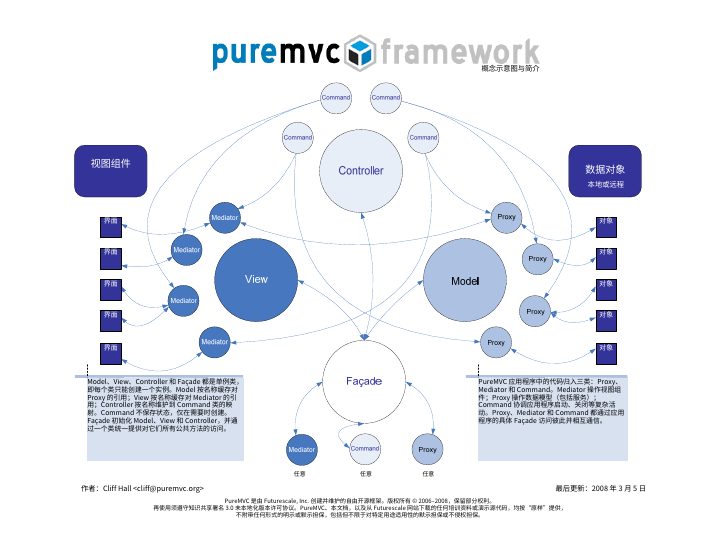
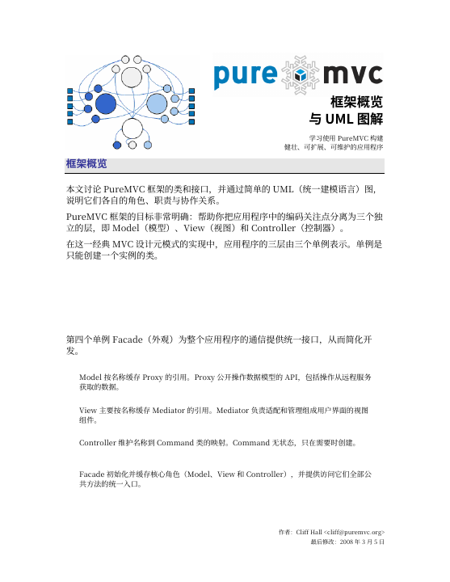
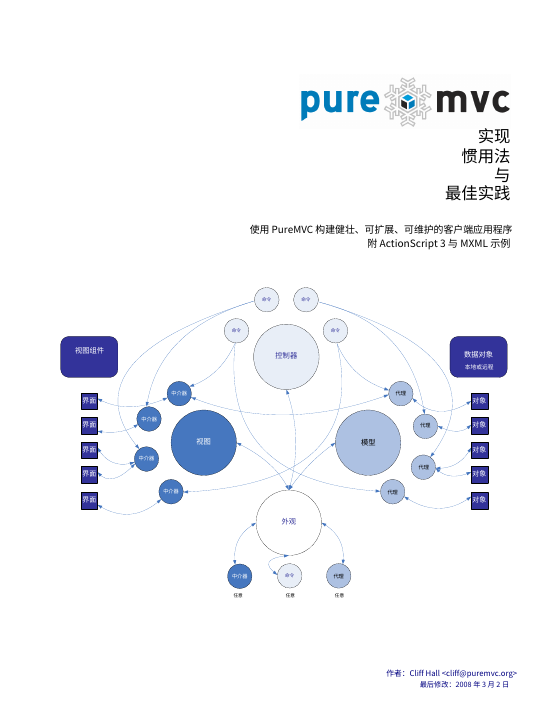
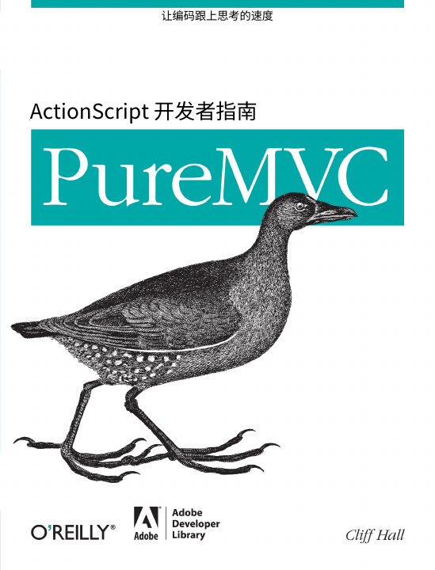

PUREMVC · PDF LIBRARY
从概念到实践，
循序阅读 PureMVC。
四册中文 PDF，保留书籍原有的页面排版、插图、代码与目录书签。按下方顺序开始阅读，也可以下载后离线查看。
4 册书籍323 页内容网页阅读 · 目录导航 · 全文搜索 · PDF 下载
推荐阅读顺序
由浅入深，从一张图开始


保留原书排版
阅读页支持缩放、搜索、目录与页码跳转。目录或书内标注的页码可能与 PDF 页序不同。
译本说明与校验记录
查看随书说明，了解翻译范围、历史示例、勘误与原始文件校验值。